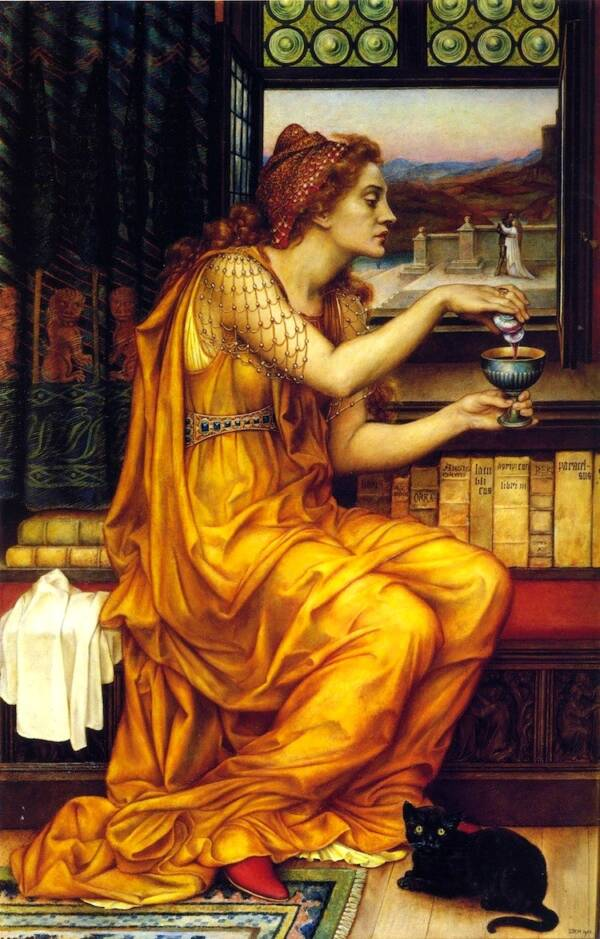

Locusta was a notorious poison maker who was active in the Claudius-Nero reign around 1ST Century Roman Empire. She was born in Gaul and as a young girl was taught about the healing herbs and the poisonous herbs. When she came of age she went to Rome during Emperor Claudius Reign. During that time in the ‘’Eternal city” assassinations were rife especially among nobility. Therefore Locusta found herself at home as she marketed herself as a posion maker. It is said that she considered poison making her magnum opus. Thus she had a booming business especially among the nobility.
 Locusta the poisoner; Courtesy of fr.wikipedia.orgHer fame reached far and wide and while she was arrested for various poisoning assassinations including poisoning babies she often escaped prosecution owing the clientele she served. Soon news of her expertise reached Emperor Claudius’s Wife Agrippina the Younger who wanted to eliminate her husband Claudius in order for Nero her son from a previous marriage to rise to the throne. Nero’s half brother Britannicus and the biological son of Emperor Claudius was also a threat. In 54 Ad Agrippina went to Locusta and requested a poison which was given to her. She then proceeded to sprinkle it over he emperor’s favorite food, mushrooms. When the poison failed to kill him another poison was put on a feather and was jammed into the Emperor’s throat and he then proceeded to die. Nero was now Emperor but there was still an issue of the thirteen year old Britannicus.Locusta’s services were needed once more. A party was held and the poison put in Britanicus cup of wine. The poison reacted so quickly that he died within moments and his body was covered in ash to conceal the skin’s posion reaction. Nero blamed his death on epilepsy which plagued young Britannica’s life and was hastily buried. Unfortunately the rain washed off the ash to reveal the truth and soon Locusta was arrested. She was soon released by Nero and was given fortune and large estates and she was also given immunity and permission to perform risk-free assassinations and even opened her own poison school where she taught her apprentices on the dark arts of poison making. It was rumored she even attempted to poison Agrippina the Emperor’s mother but it backfired. However in 69 a.d Emperor Nero was forced to commit suicide at the behest of his rivals and even procured a poison from Locusta although he died by other means. The new Emperor, Emperor Galba had heard of Locusta’s works and vowed to make her an example and a warning to others. He proceeded to execute Nero’s aides including her. Her execution was so brutal (there are claims she was raped by a Giraffe during her execution) even by Roman standards. It is not known how many people Locusta killed but it said they run into hundreds if not thousands. And thus this makes her the world’s first serial killer and poisoner of emperors.